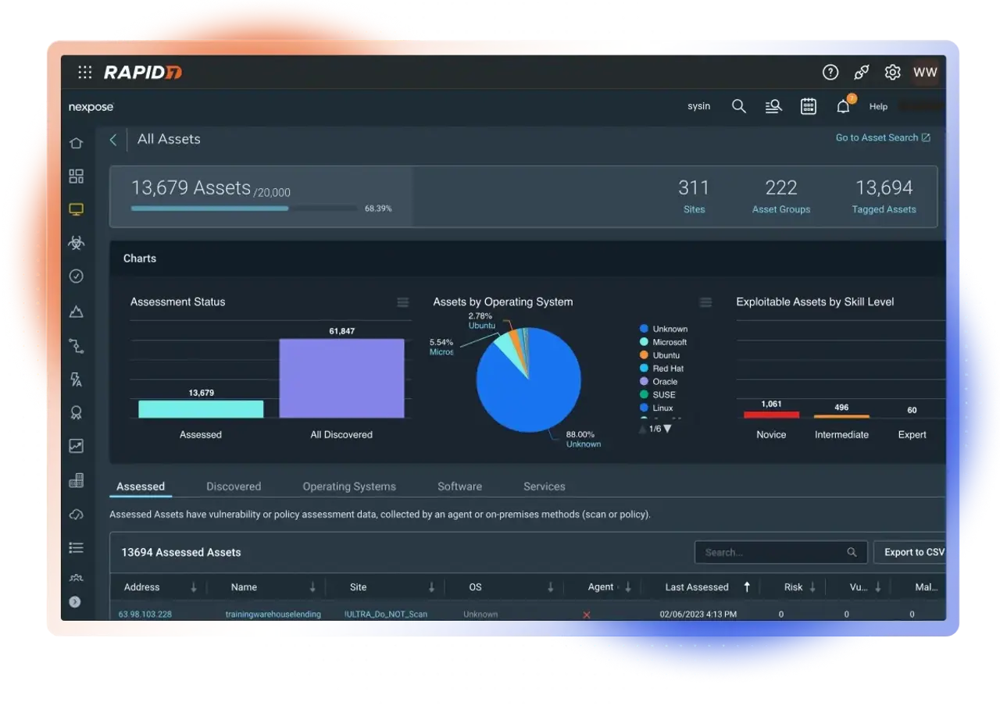
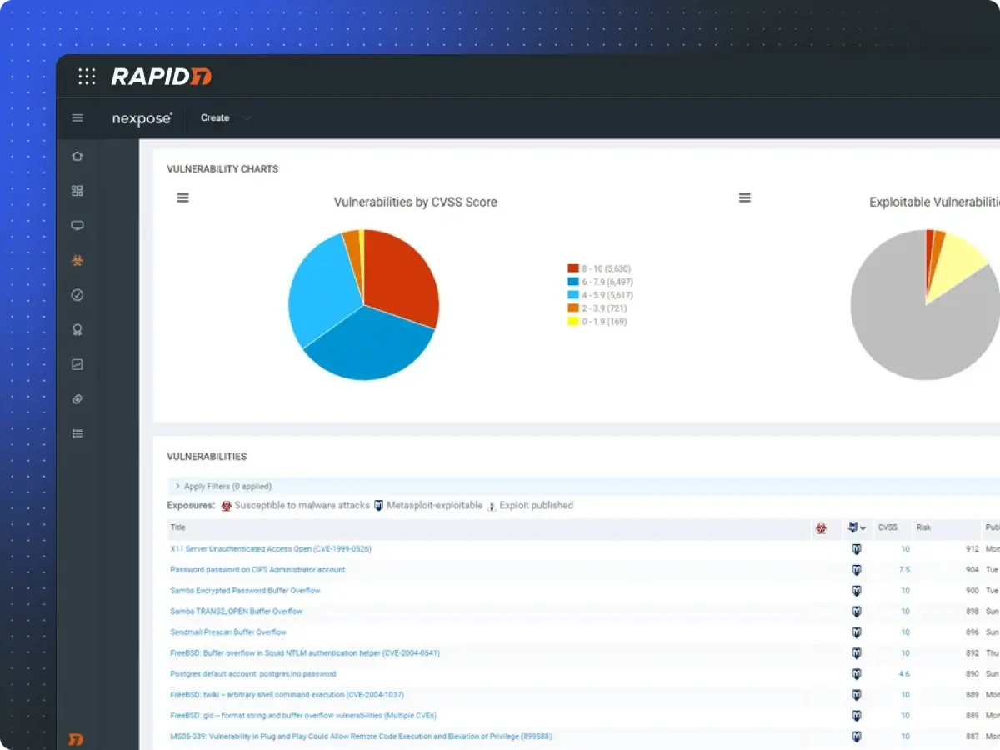
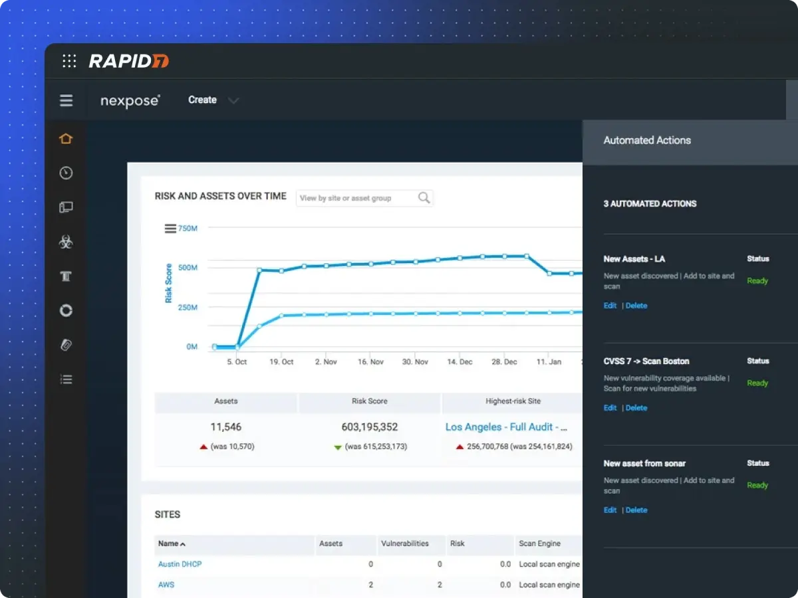
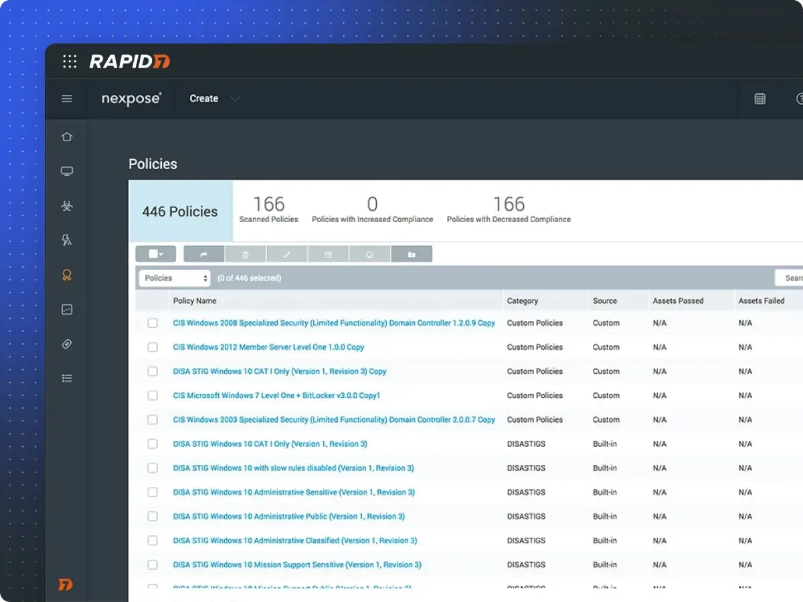
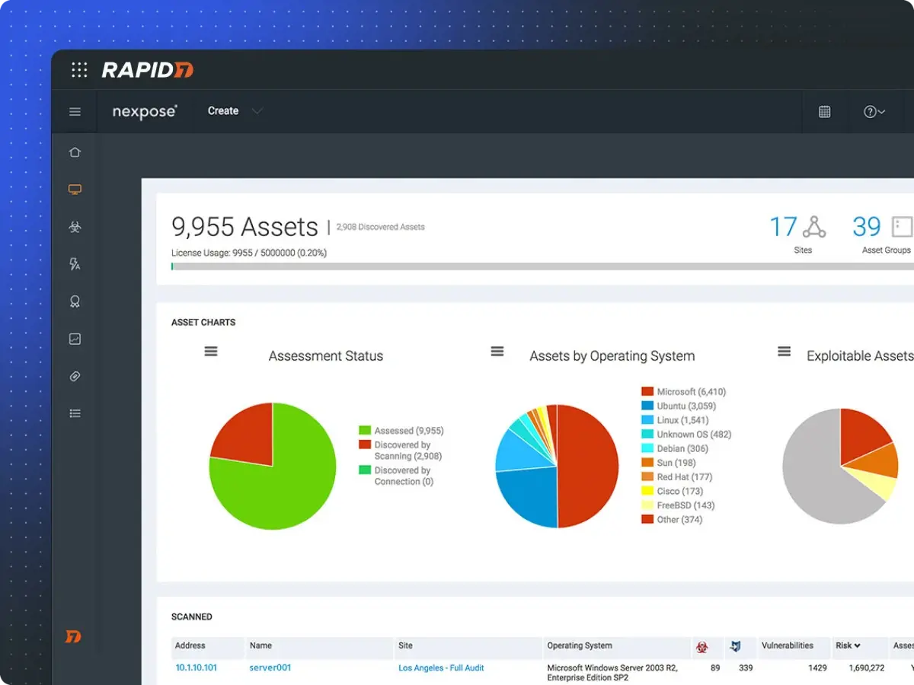

请访问原文链接：Nexpose 8.56.0 for Linux & Windows - 漏洞扫描 查看最新版。原创作品，转载请保留出处。
作者主页：sysin.org
Rapid7 Nexpose Vulnerability Scanner
本地部署的漏洞扫描器
一款强大的漏洞管理解决方案，可在整个环境中提供全面的资产可见性，同时协助风险的优先级排序与修复。

工作原理
收集
通过对整个网络的实时覆盖，随时掌握风险情况。
优先级排序
借助更具意义的风险评分，了解应优先关注哪些漏洞。
修复
为 IT 提供快速高效修复问题所需的信息。
评语：对于大型企业来说 —— 无论多大规模 —— 这款产品都非常值得考虑。它功能强大，具有可靠的历史表现与优秀的支持选项。
—— SC Magazine
核心功能
助你在关键时刻采取行动的漏洞扫描软件。
实际风险评分
传统的 1-10 CVSS 分数往往会标记成千上万个“高危”漏洞。我们的漏洞扫描器采用实际风险评分（Real Risk Score），提供更具可操作性的洞见 (sysin)。该评分不仅考虑漏洞的存在时间，还包括公开利用代码或恶意软件工具包等因素，1-1000 的评分范围可突显最有可能被攻击者利用的漏洞，助你优先处理真正关键的问题。
结合强大的标签系统，还可自动优先处理对你的业务最关键的系统。

自适应安全
“被动扫描”常伴随大量误报和陈旧数据，源自不频繁的数据导出。而借助 Nexpose 的自适应安全功能，一旦新设备或新漏洞访问你的网络，即可实现自动检测与评估。
结合与 VMware 和 AWS 的动态连接，以及与 Sonar 研究项目的集成，Nexpose 为你提供真正的实时环境监控。

策略评估
加强系统防护与发现并修复漏洞同样重要。
Nexpose 提供内置的策略扫描，帮助你依据 CIS 和 NIST 等主流标准对系统进行基准评估 (sysin)。直观的修复报告提供逐步指导，说明哪些操作将最显著提升合规性。

修复报告
修复报告列出可降低最大风险的前 25 项行动，并附有清晰的操作指南。
还可为管理层创建趋势报告，展示安全项目的投资回报与进展情况。

系统要求
HARDWARE REQUIREMENTS:
Security Console requirements
At this time, we only support x86_64 architecture.
| Asset volume | Processor | Memory | Storage |
|---|---|---|---|
| 5,00- | 4 cores | 16 GB | 1 T- |
| 20,00- | 12 cores | 64 GB | 2 T- |
| 150,00- | 12 cores | 128 GB | 4 T- |
| 400,00- | 12 cores | 256 GB | 8 T- |
Scan Engine requirements
At this time, we only support x86_64 architecture.
| Asset volume per day | Processor | Memory | Storage |
|---|---|---|---|
| 5,000 assets/da- | 2 cores | 8 GB | 100 GB |
| 20,000 assets/da- | 4 cores | 16 GB | 200 GB |
*Note: While a single scan engine is capable of scanning in excess of 20,000 assets per day, it is recommended to distribute scans across multiple scan engines for optimal performance.
At this time, only x86 architecture is supported.
OPERATING SYSTEMS:
We require an English operating system with English/United States regional settings.
x64 versions of the following platforms are supported:
Linux
- Ubuntu Linux 24.04 LTS
- Ubuntu Linux 22.04 LTS
- Ubuntu Linux 20.04 LTS
- Ubuntu Linux 18.04 LTS
- Ubuntu Linux 16.04 LTS
- AlmaLinux 9 and Rocky Linux 9
- Red Hat Enterprise Linux Server 9
- Red Hat Enterprise Linux Server 8
- Red Hat Enterprise Linux Server 7
- Oracle Linux 8
- Oracle Linux 7
- SUSE Linux Enterprise Server 15
- SUSE Linux Enterprise Server 12
Windows
- Windows Server Desktop experience only. Core not supported.
- Microsoft Windows Server 2025
- Microsoft Windows Server 2022
- Microsoft Windows Server 2019
- Microsoft Windows Server 2016
- Microsoft Windows 11 (Not listed, For testing only)
- Microsoft Windows 10 (Not listed, For testing only)
BROWSERS:
- Google Chrome (latest) (Recommended)
- Mozilla Firefox (latest)
- Mozilla Firefox ESR (latest)
新增功能
Nexpose 8.56.0
软件发布日期：2026 年 8 月 24 日 | 发布说明发布日期：2026 年 8 月 21 日
改进：
- InsightVM 控制台和扫描引擎中捆绑的 Java 运行时环境（Azul Zulu JDK 17）已从 17.0.18 版本更新至 17.0.20 版本，提升了安全控制台整体的安全性。
修复：
修复了部分客户在运行包含“基线比较”（Baseline Comparison）部分的报告（例如“执行概览”（Executive Overview）、“审计报告”（Audit Report））时遇到报告生成失败的问题。该问题发生的原因是某些内部漏洞标识符超过了预期的长度限制 (sysin)，导致报告生成失败。现在，无论漏洞标识符长度如何，基线比较报告均可成功生成。
修复了“筛选资产搜索”（Filtered Asset Search）页面上的一个问题：用户输入筛选值后，如果未先离开输入字段就直接点击“搜索”（Search），系统可能会发送一个空筛选条件，并返回未经过筛选的全部资产结果。现在，筛选条件始终能够正确应用。
下载地址
此产品每月更新，仅列出最新版，不定期清理。
Rapid7 Vulnerability Management - Nexpose v8.56.0 for Linux x64
- 百度网盘链接：https://pan.baidu.com/s/1dUB-2-3i6be4Wt_WfImM1w?pwd= <专享>
- 已/将上传到上个版本相同目录中。
- 推荐运行在 Ubuntu 22.04 OVF 中！
Rapid7 Vulnerability Management - Nexpose v8.56.0 for Windows x64
- 百度网盘链接：https://pan.baidu.com/s/1l6Sejat3yzAwa9gEd2ER2g?pwd= <专享>
- 已/将上传到上个版本相同目录中。
- 推荐运行在 Windows Server 2022 OVF 中！
相关产品：
更多：HTTP 协议与安全

文章用于推荐和分享优秀的软件产品及其相关技术，所有软件提供免费版或试用版。内容若侵犯了您的版权，请联系作者删除。如果您喜欢这篇文章，或者觉得它对您有所帮助，亦或发现有不当之处；欢迎发表评论，也欢迎分享这个网站，或者赞赏一下，谢谢！提示：捐赠或赞赏属于自愿赠予行为，提交后即表示您对作者的支持与认可。为避免误操作，请在确认前仔细检查金额，支付完成后将无法撤销或退还。
 支付宝赞赏
支付宝赞赏  微信赞赏
微信赞赏赞赏一下
敬请注册！点击 “登录” - “用户注册”（已知不支持 21.cn/189.cn 邮箱）。 请勿使用联合登录（已关闭）。